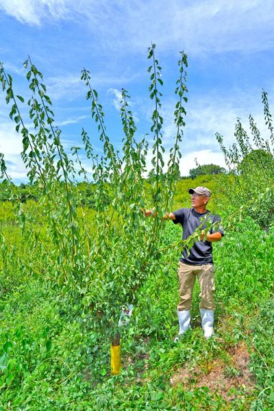
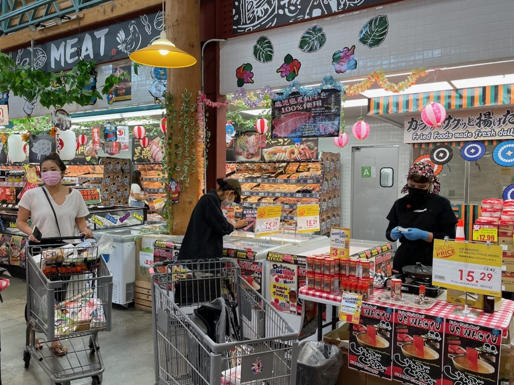
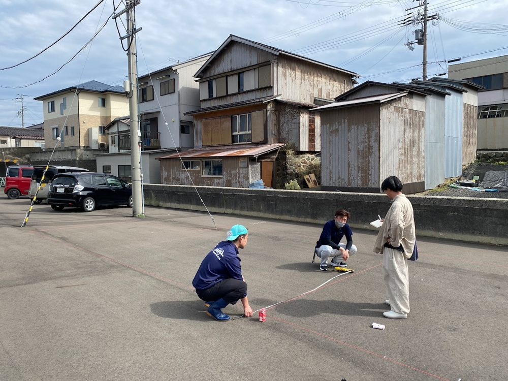

いま取り組んでいることは、どれも「食」から始まっています。世界基準の品質で「食」を世界に届ける高浜、「食」を観光で訪れるきっかけにする能登、「食」で地域とのつながりを続けるみなべ。それぞれの土地で、じっくり腰を据えて進めています。
高浜町が誇る水産加工品を、世界基準の品質認定で裏付けて、海外市場への扉を開こうとしています。
地域再生マネージャーとして、大日本水産会と一緒に対米HACCP認定プロジェクトを進めています。認定までのロードマップ、加工場の改修計画、投資対効果を含めた事業計画づくりまで、現場と相談しながら形にしているところです。
認定を取ることがゴールではなく、そこからがスタートだと思っています。現場の担当者が自分で衛生管理を記録し、改善を回し、輸出の実務までこなせるようになる。そんな教育プログラムを、現場の皆さんと一緒に進めています。認定を維持して輸出を続けていく力が町の中で育っていくこと。それがこのプロジェクトの本当の目標です。
目標：2027年 認定取得

縄文の真脇遺跡、あばれ祭、そして受け継がれてきた食文化。能登町には、世界に伝えたい物語がたくさんあります。
観光庁「地域観光資源の多言語解説整備促進事業」（令和8年度採択）で、海外の旅行者の目線に立った解説文づくりを監修しています。めざしているのは、「食と文化を体験する観光」につなげること。食と観光をどう結ぶかが、この事業の核心だと考えています。

梅の木のオーナーになって、実りを待ち、その実を受け取る。「食」を通じて、地域との関係が続いていくことをめざしています。
世界農業遺産「みなべ・田辺の梅システム」の地で、地元農家と一緒に梅の木の「梅主（ばいぬし）オーナー制度」を企画・実施しました。オーナーは木の成長を見守りながら、青梅や梅干しなどの梅製品を受け取り、農泊や農作業体験を楽しめます。届いた梅と体験が、年間を通じて地域と関わり続けるきっかけになればと思っています。
食・一次産業をサポートするKDDIさんの αU Market をプラットフォームに、新しいアイデアを掛け合わせて地域を盛り上げていく。一次産業の経営を支える関係人口を、地域と一緒に育てています。
紀伊民報（2026年9月8日）「梅の成長 共に見守る、和歌山・みなべの農園がオーナー制度導入」
梅は苗木から安定して出荷できるまで約12年。その間の収入をどう確保するか、という農家の課題に、山本やすお農園が「梅主（ばいぬし）オーナー制度」で応えた取り組みを紹介していただきました。
▶ 紀伊民報 記事を読む


加工場の床の傾斜をどうするか、という現場の細かな話から、海外マーケットとの商談まで。分けずに、ひとつながりで動きます。
「価値ある商品づくり」と「どうすれば売れるか」を、自分の手で試してきました。そのノウハウを、地域の事業に活かしています。

「海外の目線」で地域の魅力を掘り起こし、商品開発や商談からインバウンド向けのコンテンツまで、つくるところから伝えるところまで一緒に進めます。

現場が動き続けるように、業務の仕組み化や教育に加えて、ストレングスコーチとして一人ひとりの強みを活かし、地域のチームが前に進む力に変えていきます。
地域の皆さんと同じチームの一員として、成果が続く土台を一緒につくります。
2001年、総合商社を退職した父が設立した会社です。海外製品の輸入、研修生の受け入れやボランティア、地域への日本文化の継承など、草の根の国際交流と地域貢献に力を注いでいました。そのDNAを受け継いで、2024年から事業を再開しました。
代表取締役 ／ Kenji Yonenaga
米国駐在、欧州系食品メーカー日本法人の立ち上げ社長、北米食品商社の現地責任者など、国内外の食品企業で30年あまり。その経験を、いまは地域の現場で活かしています。

営業入社、マーケティング、米国駐在、商品開発研究所
スイス大手冷凍パンメーカー日本法人にて商品統括マネージャー・取締役を歴任
立ち上げ社長として日本法人を設立し、事業を軌道に乗せる
現地責任者として、和牛・水産品の輸入販売事業のマネジメントと市場拡大を推進
各地で地域創生プロジェクトを推進